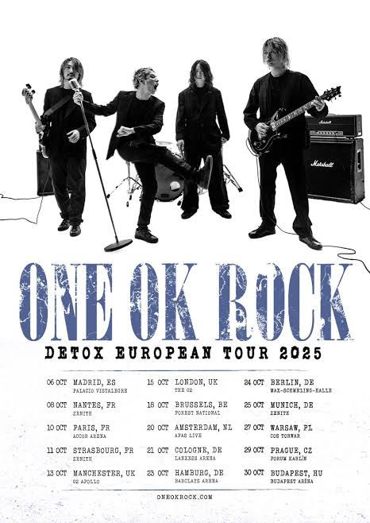

Sobre nosotros
One Ok Rock (ワンオクロック Wan Oku Rokku?, estilizado como ONE OK ROCK) es una banda japonesa de rock formada en el año 2005, actualmente compuesta por cuatro miembros, Takahiro Moriuchi (vocalista), Toru Yamashita (guitarra), Ryota Kohama (bajo) y Tomoya Kanki (batería).
Originalmente la banda estuvo compuesta por cinco miembros hasta que el guitarrista Alexander Onizawa abandonó el grupo en 2009. Sus canciones enérgicas no sólo han conseguido atraer gran atención en su país natal y Asia, sino también considerablemente en el extranjero llevándolos a realizar giras internacionales por Europa y América. A la fecha cuentan con once álbumes de estudio

Integrantes
Takahiro Moriuchi
Más conocido por su nombre artístico "Taka" (Halcón) (Tokio, Japón, 17 de abril de 1988) es un cantante y compositor japonés. Es el vocalista y compositor del grupo de j-rock One Ok Rock.
Toru Yamashita
Es un destacado músico, compositor y productor japonés, mundialmente reconocido por ser el guitarrista y líder de la banda de rock ONE OK ROCK
Ryota Kohama
Es un músico japonés, famoso a nivel mundial por ser el bajista y miembro fundador de la banda de rock ONE OK ROCK. Nacido el 4 de septiembre de 1989 en Osaka, es el integrante más joven de la agrupación y destaca por su desbordante energía y carisma en el escenario
Tomoya Kanki
Es un aclamado músico japonés, mundialmente reconocido por ser el baterista de la banda de rock ONE OK ROCK. Nacido el 27 de junio de 1987 en la Prefectura de Hyōgo, es el miembro de mayor edad de la agrupación